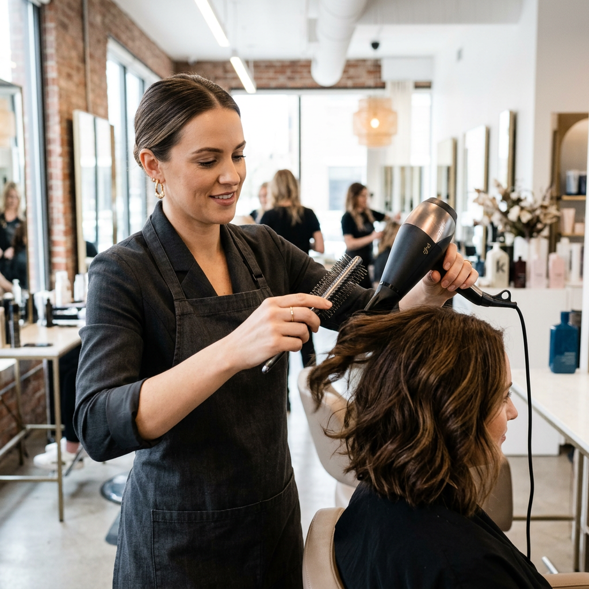
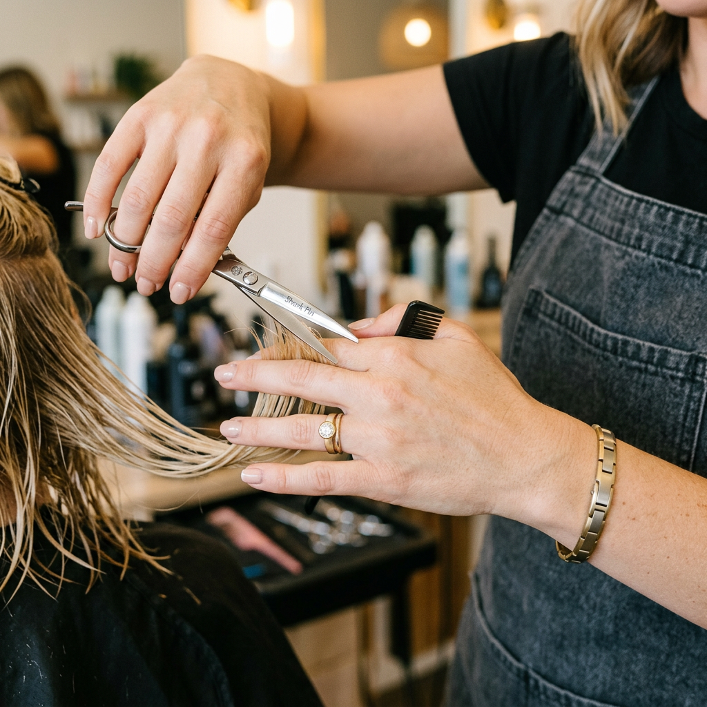
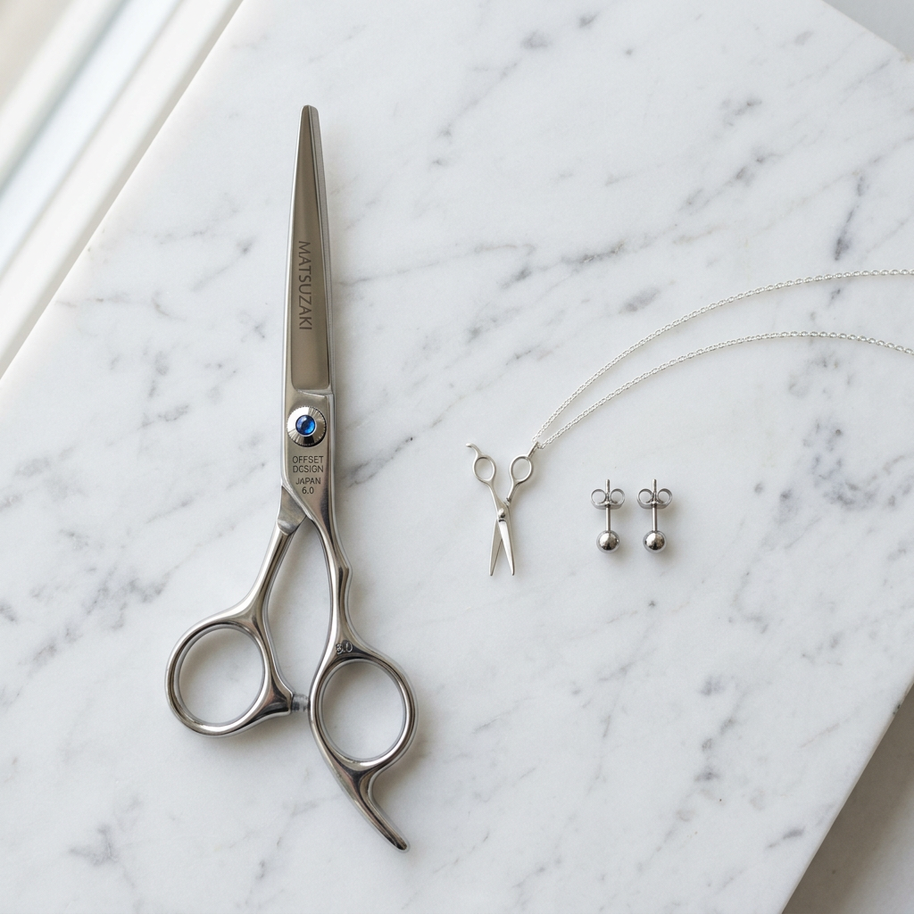

The Professional's Guide to Hairdressing Jewellery: Style, Safety, and Durability in the Salon
The Stylist’s Dilemma: Looking Sharp Without the Hazard
As a hair professional, your personal brand is your calling card. You spend your days transforming others, so it’s only natural to want your own style to reflect your creativity. However, the salon floor is a unique environment. Between the constant exposure to harsh chemicals, the physical demands of standing all day, and the very real risk of hair splinters or snagging, your choice of hairdressing jewellery isn't just a fashion statement—it’s a functional decision.
Have you ever had a client’s hair get caught in your ring? Or noticed your favorite silver necklace tarnishing after a day of heavy color applications? These aren't just minor annoyances; they are professional setbacks. To maintain a high-end image while ensuring maximum efficiency, you need jewellery that works as hard as you do.

Why Material Science Matters for Hairdressers
In the world of professional styling, not all metals are created equal. The chemicals found in lighteners, permanent dyes, and even some styling resins can cause rapid oxidation or pitting in lower-quality metals. When shopping for hairdressing jewellery, durability is paramount.
1. Surgical-Grade Stainless Steel and Titanium
These are the gold standards for the salon. Both materials are non-porous and highly resistant to corrosion. They won't react with hair bleach or ammonia, meaning your pieces will stay shiny and safe even after hundreds of shampoo bowls. Furthermore, they are hypoallergenic, which is crucial when you're working in a high-moisture environment where skin irritation can easily occur.
2. High-Grade Silicone
For rings, silicone has become a revolution. Many top-tier stylists swap their traditional metal bands for high-quality silicone while on the clock. It eliminates the risk of 'ring avulsion' (a serious safety hazard in physical jobs) and won't trap hair or moisture against your skin, preventing the dreaded 'stylist's dermatitis.'
3. PVD Coated Gold
If you love the look of gold, look for Physical Vapor Deposition (PVD) coating. This isn't your standard gold plating; it’s a vacuum coating process that makes the finish significantly more durable and resistant to the sweat and chemicals common in the salon environment.
The Best Jewellery Types for Daily Salon Wear
Selecting the right *type* of jewellery is just as important as the material. Here is how to curate a professional look that doesn't interfere with your craft.
Earrings: The Power of the Stud
While large hoops are a classic fashion staple, they are a liability behind the chair. A client’s comb or even your own blow-dryer nozzle can easily snag a hoop. Instead, opt for high-quality studs or 'huggie' style earrings that sit flush against the earlobe. These provide the sparkle you want without the risk of a painful snag during a fast-paced blowout.
Rings: Low Profile is Key
High-set stones (like traditional engagement rings) are notorious for catching hair. Every time you run your fingers through a client's hair to check a blend, a high setting can pull or snag. Look for bezel settings or tension sets where the stone is flush with the metal. This ensures a smooth glide through every section.

Necklaces: Length and Safety
A necklace that is too long will dangle into your workspace—or worse, into the color bowl. If you wear a necklace, keep it to a 16 or 18-inch length so it stays close to your collarbone. Ensure the clasp is high-quality; the last thing you want is a necklace falling off into a sink full of hair and water.
The Psychology of Themed Jewellery
There is a unique power in wearing jewellery that reflects your trade. Subtle nods to the craft—such as miniature shears, combs, or blow-dryer charms—serve as excellent conversation starters. They demonstrate a passion for your profession and can help build an immediate rapport with new clients.
However, the key here is 'subtle.' High-end hairdressing jewellery should look like fine jewellery first and a 'tool' second. Look for minimalist designs in precious metals that signify your expertise without looking like a costume accessory.
Maintenance: Keeping Your Pieces Salon-Ready
Even the best jewellery needs care. At the end of every shift, it is a best practice to wipe down your pieces with a soft microfiber cloth. This removes any microscopic droplets of hairspray or color that may have settled during the day. Once a week, a gentle soak in warm water with a mild, pH-balanced soap will keep your accessories looking as professional as your portfolio.
Final Verdict: Investing in Your Professional Image
Your appearance is an extension of your art. By choosing jewellery that respects the physical and chemical realities of the salon, you protect your investment and your safety. Focus on non-reactive metals, low-profile shapes, and pieces that celebrate the craft. When you look like a polished professional, you command the respect and the premium rates that your skills deserve.
